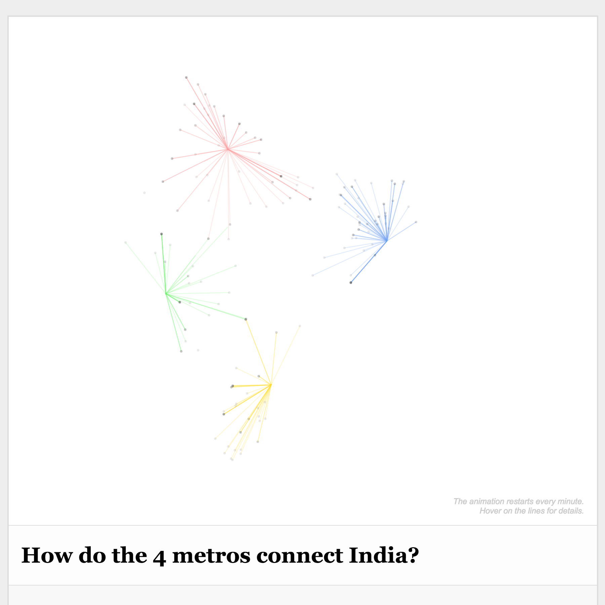
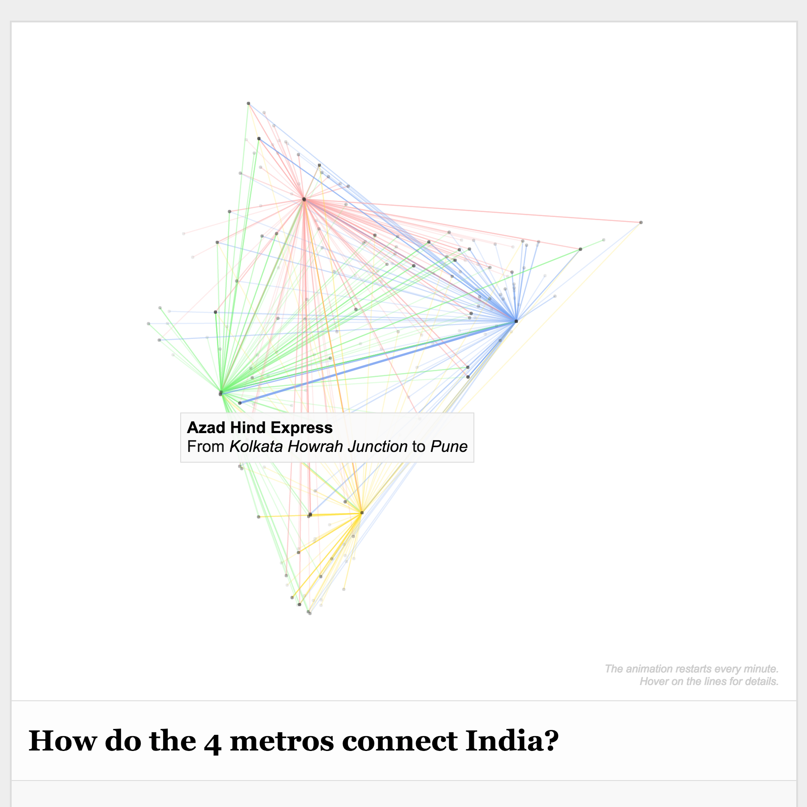

The animation restarts every minute.
Hover on the lines for details.
Hover on the lines for details.
How do the 4 metros connect India?
This project visualizes trains from the four Indian metros: Delhi, Mumbai, Chennai & Kolkata.
The visualization emerges with the shortest routes first, and shows longer routes with time.
Hover on the lines to know more about the particular train & cities it connects.
Created by Rasagy Sharma & Babu R. from NID Bangalore.
Thanks to Prof. Venkatesh for his guidance and S Anand for the dataset.
